Estimation experiment for structurally described system
In this example, the state of the following system will be estimated using the unscented Kalman filter (UKF)
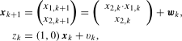
where 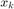 denotes state to be estimated and 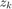 denotes the measurement. The stochastic quantities 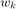 and 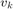 are described by the following pdf's
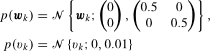
and the pdf of the initial state 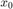 is
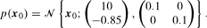
The classes necessary for description of this problem is depicted below.
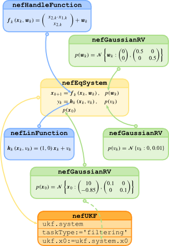
The model of the system given by the previous relations is described within NEF in three steps.
- creation of objects describing the state update and measurement functions and of the
- creation of objects describing the pdf's of the state and measurent noises and of the initial condition
- instantiation of the class nefEqSystem
The stochastic functions will be created using instances of nefHandleFunction and nefLinFunction class, respectively. The multivariate nonlinear function representing the state update equation is specified using the following command
fFun=@(x,u,w,k)[x(1)*x(2)+w(1);x(2)+w(2)];
f=nefHandleFunction(fFun,[2 0 2 0],'diff1Noise',@(x,u,w,k) eye(2));
where the first parameter of the nefHandleFunction class constructor is the MATLAB® anonymous handle function, the second parameter specifies the dimensions of the state, control input, state noise and time. The last two parameters specify the first derivative of the nonlinear function with respect to the noise . The measurement equation is linear and the framework provides two ways of representing such function. The first alternative is to use again the nefHandleFunction class, i.e.
H=[1 0];
hFun=@(x,u,v,k) H(1)*x(1)+H(2)*x(2)+v;
h=nefHandleFunction(hFun,[2 0 1 0],'diff1Noise',@(x,u,v,k) 1);
and the second alternative is to create instance of the class nefLinFunction in the following way
H=[1 0]; h=nefLinFunction(H,[],1);
where the second and third parameter specify that there will be no control input in the equation and that the noise will be not weighted, respectively.
The next step is to describe the random variables , and the prior . All those random quantities are considered to be Gaussian and thus they are described by instances of the nefGaussianRV class:
w=nefGaussianRV([0 0]',eye(2)*0.05); v=nefGaussianRV(0,0.01); x0=nefGaussianRV([0.9;-0.85],1e-1*eye(2));
Now, it is possible to define the system and proceed with the simulation of its trajectory. As the system is described by stochastic equations, it is necessary to use the nefEqSystem class
model = nefEqSystem(f,h,w,v,x0);
The simulation is accomplished by invoking the simulate method of the model object. The system is simulated for 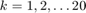 by executing the following commands
nSteps=20; [z,x]=simulate(model,nSteps,[]);
where the second parameters determines the number of time steps that should be simulated. The last parameter can be used for specification of the control input if necessary.
Finally, it is possible to proceed with the state estimation itself. For this example the unscented Kalman filter was chosen. The object describing this estimator is created by executing the following command
UKF = nefUKF(model);
This contructor creates UKF as estimator with the filtering task (which is the default one). Alternative way of creating estimator for the filtering task wold be
UKF2 = nefUKF(model,'taskType','filtering');
In case the prediction or smoothing task will to be performed the taskType parameter is set to 'prediction' or 'fixedLagSmoothing', respectivelly. The difference between time steps 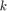 and 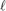 occuring in the pdf 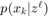 is then specified by input parameter pair consiting of string 'taskPar' and numeric value e.g. the estimator created by the following command will perform two step prediction
UKF_prediction = nefUKF(model,'taskType','prediction','taskPar',2);
The estimation is then carried out issuing the following command that calls the estimate method of the estimator
[estimates] = estimate(UKF,z,[]);
The results of estimation are stored in cell array data structure with elements given as objects of the nefGaussianRV class, i.e. the user receives the pdf's of the estimates. The following code shows the possible way how to graphically compare the point estimates with real state components. Firstly it is necessary to extract the point estimates, i.e. the mean values, form the pdf's
time = 1:nSteps; xPointEst=zeros(2,nSteps); for i = time xPointEst(:,i) = evalMean(estimates{i}); end
and then plot them together and compare with the simulated state
subplot(2,1,1) plot(time,x(1,:),'b',... time,xPointEst(1,:),'r--') legend('true','UKF point estimate') subplot(2,1,2) plot(time,x(2,:),'b',... time,xPointEst(2,:),'r--') legend('true','UKF point estimate')